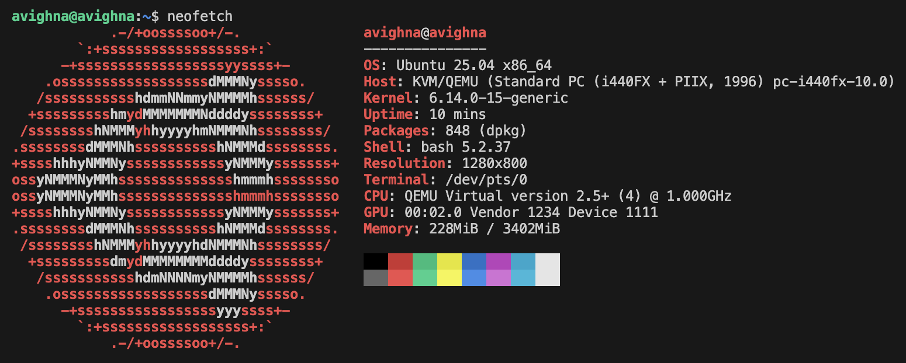

mac-wsl
(Click here for the original markdown for this tutorial!)
A tutorial on how to set up a WSL-like Linux virtual machine on Apple silicon macbooks.

Introduction
Have you recently switched to macOS and found yourself missing the convenience of wsl? On Windows, spinning up a full Linux environment was as easy as typing a command in the terminal. Now, with your new Apple Silicon Mac, not only is wsl unavailable, but you're also dealing with an ARM-based architecture—making it even harder to run tools like valgrind. It can feel like a developer's nightmare.
Thanks to modern day virtualization technologies, however, setting up a Linux virtual machine on any operating system (macOS, Windows) is really easy if you know what you're doing. However, to my despair, tools like Parallels desktop seem to be the only virtual machine tools ever talked about when it comes to macOS. I've heard stories of many of my friends even paying for Parallels just because they think that's the only option they have.
However, of course this isn't true. Digging a little deeper, you'd find out about UTM.
If you want an easy virtualization solution, use UTM: it's amazing and not talked about enough.
QEMU
However, in this tutorial, we won't be using UTM. We'll be using the tool UTM is based on: QEMU. QEMU is a classic, and again, it isn't as well known as I'd have hoped.
Prerequisites
- homebrew - A package manager for macOS.
- qemu - The virtualization tool we will install using homebrew.
- Ubuntu Server 25.04 - The Linux distribution used in this tutorial.
Installation
Install qemu with the following command:
brew install qemuThis is what we'll be using to run the virtual machine.
Make sure you've downloaded an .iso file for your distribution of choice. As stated above, this tutorial will be using Ubuntu Server 25.04.
Then create a folder in your ~/ directory named vms.
mkdir -p ~/vms/ubuntuNavigate to that directory and run this command:
qemu-img create -f qcow2 ubuntu-server.qcow2 20GThis creates a virtual disk image that supports dynamic sizing with a max-size of 20 GB. The file grows as needed.
Next, boot up your .iso file for installation. For Ubuntu (and I suppose most Linux distributions that use grub), you'll need to use the GUI for the installation as grub can be weird on terminals.
qemu-system-x86_64 \
-m 4096 \
-smp 4 \
-machine type=pc,accel=tcg \
-drive file=ubuntu-server.qcow2,format=qcow2 \
-cdrom /path/to/ubuntu.iso \
-boot dModify the RAM (-m), CPU cores (-smp), and the .iso path (-cdrom) as needed. For the installation step, I recommend allocating generous resources—higher RAM and more CPU cores—to make the process less painfully slow. Once you run the command, a QEMU window will launch, and you’ll be guided through the Ubuntu installation. You can safely accept the default options throughout. Keep in mind that since you're emulating an x86_64 system on an ARM-based Mac, performance will be sluggish—this is expected during setup.
After around half an hour, installation should be done. Ubuntu will now instruct you to reboot. Close the QEMU window. To run the VM, you'll first need to unmount the .iso file. Run this command:
qemu-system-x86_64 \
-m 4096 \
-smp 4 \
-machine type=pc,accel=tcg \
-drive file=ubuntu-server.qcow2,format=qcow2 \
-boot c \
Go through the setup of logging in for the first time. If you've gotten this far, congratulations! The hard part is done.
Setting up ssh
This part of the tutorial sets up a bash script called ubuntu that you can use to automatically start the virtual machine, shut it down, and ssh into it to get a live shell.
Firstly, make sure your virtual machine is turned on with user-mode networking:
qemu-system-x86_64 \
-m 4096 \
-smp 4 \
-machine type=pc,accel=tcg \
-drive file=ubuntu-server.qcow2,format=qcow2 \
-net user,hostfwd=tcp::2222-:22 \
-net nic \
-boot c \
Then generate an ssh key on your Mac, if you don't have one already:
ssh-keygen -t ed25519 -C "your_email@example.com"Copy this key to your virtual machine:
ssh-copy-id -p 2222 username@localhostDoing all of this lets you ssh into Linux without having to enter your root password. With just this much alone, you're pretty much set. However, as promised, here's a bash script that just makes it that much more convenient:
Save this to a file called ubuntu:
#!/bin/bash
# ====== MODIFY THESE ======
IMG_PATH="/Users/avighna/vms/ubuntu/ubuntu-server.qcow2"
SSH_PORT=2222
SSH_USER="avighna"
# ===========================
QEMU_CMD="qemu-system-x86_64 \
-m 4096 \
-smp 4 \
-machine type=pc,accel=tcg \
-drive file=$IMG_PATH,format=qcow2 \
-net user,hostfwd=tcp::${SSH_PORT}-:22 \
-net nic \
-boot c \
-nographic"
LOG_FILE="$HOME/qemu-ubuntu.log"
function is_running() {
pgrep -f "qemu-system-x86_64.*$(basename $IMG_PATH)" > /dev/null
}
function start_vm() {
if is_running; then
echo "VM already running."
else
echo "Starting VM..."
nohup $QEMU_CMD > "$LOG_FILE" 2>&1 &
echo "Waiting ~60 seconds for VM to boot..."
sleep 60
echo "VM should be ready now."
fi
}
function shutdown_vm() {
if ! is_running; then
echo "VM is not running."
else
PID=$(pgrep -f "qemu-system-x86_64.*$(basename $IMG_PATH)")
echo "Shutting down VM (PID $PID)..."
kill $PID
echo "Shutdown signal sent."
fi
}
function ssh_into_vm() {
ssh -p $SSH_PORT ${SSH_USER}@localhost
}
case "$1" in
--start)
start_vm
;;
--shutdown)
shutdown_vm
;;
"")
if ! is_running; then
start_vm
fi
ssh_into_vm
;;
*)
echo "Usage: $0 [--start|--shutdown]"
;;
esacGive this script permission to execute:
chmod +x ubuntuAnd copy it to something like /usr/local/bin with sudo cp ubuntu /usr/local/bin/ubuntu.
That's it; you're all set up. Enjoy your new Linux virtual machine on macOS!